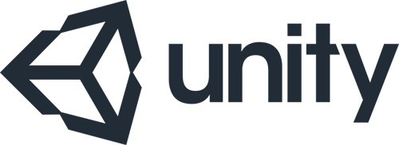
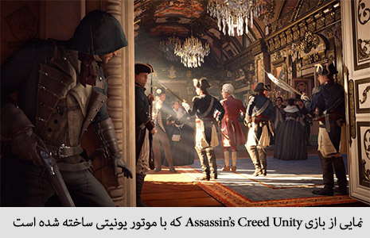
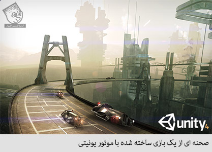
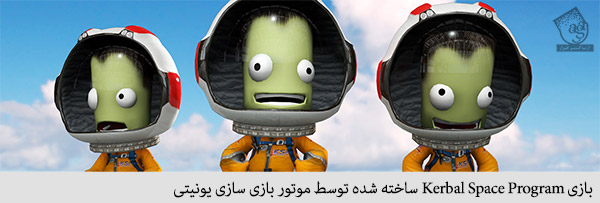
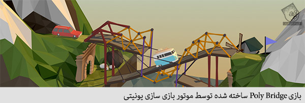
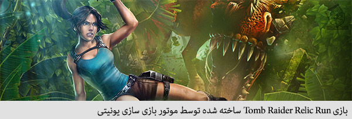

خبرنامه
با عضویت در خبرنامه آخرین اخبار و مطالب را در ایمیل خود دریافت نمایید.
جلسه اول
معرفی موتور بازی یونیتی

موتور بازی سازی یونیتی
یونیتی یک موتور بازی سازی Cross-Platform است که توسط شرکت Unity Technologies توسعه یافته است و برای توسعه بازی برای PC، کنسول های بازی، گوشی های موبایل و وبسایت ها مورد استفاده قرار می گیرد. اولین بار در کنفرانس توسعه دهندگان جهانی اپل در سال 2005 تنها برای OS X معرفی شد، اما از آن زمان تاکنون گسترش داده شد تا بیش از 15 پلتفرم راپشتیبانی کند. این نرم افزار، بسته توسعه نرم افزاری (SDK) پیش فرض برای کنسول Wii U است.
پنج نسخه اصلی از یونیتی عرضه شده است. در نمایشگاه محصولات WWDC سال 2006، شرکت Apple نرم افزار یونیتی را بهترین استفاده از رده گرافیکی Mac OS X نامید.
در این مورد باید بگوییم که "کوچک فکر کنید" یعنی حدود 10 تا 12 کیلو بایت برای هر تصویر. سعی کنید در طراحی وب سایت خود از تصاویر کم حجم و کوچک استفاده کنید تا سرعت لود شدن صفحه پایین نیاید. تصاویر بزرگ، یکی از اصلی ترین دلایل پایین آمدن سرعت لود شدن صفحه است. سرعت پایین لود شدن صفحه، یعنی هدر دادن زمان بازدیدکننده، که مسلماً هر بازدیدکننده ای می خواهد در کوتاه ترین زمان ممکن به آن چه نیاز دارد دست پیدا کند. پس نتیجه آن ترک وب سایت شما توسط بازدید کننده خواهد بود.
بررسی اجمالی
این موتور APIهای زیر را هدف قرار می دهد: Direct3D روی ویندوز و Xbox 360؛ OpenGL روی Mac و ویندوز؛ OpenGL ES روی اندروید وIOS؛ و APIهای مخصوص کنسول های بازی های ویدئویی. یونیتی قابلیت فشرده سازی texture و تنظیمات رزولوشن را برای تمام پلتفرم های تحت پشتیبانی این موتور دارد و از Bump Mapping، Reflection Mapping، Parallax Mapping، Screen space Ambient Occlusion (SSAO) ، Dynamic Shadows با استفاده از Shadow Maps، Render to Texture و افکت های پس از پردازش Full Screen پشتیبانی می کند. تنوع پلتفرم موتور گرافیکی یونیتی می تواند یک Shader با چند نوع متفاوت و خصوصیات declarative fallback فراهم کند و به یونیتی توانایی تشخیص بهترین واریانت برای سخت افزار ویدئویی کنونی را می دهد و اگر هیچ کدام سازگاری نداشتند، به یک Shader دیگر برمی گردد که ممکن است بخی ویژگی ها را قربانی عملکرد کند.

یونتی به خاطر توانایی بازی سازی برای پلتفرم های مختلف معروف است. توسعه دهندگان در یک پروژه روی ارائه بازی برای گوشی های موبایل، مرورگرهای وب، کامپیوترهای دسکتاپ و کنسول ها کنترل دارند. پلتفرم های تحت پشتیبانی شامل Android، Apple TV، Blackberry 10، iOS، Linux، Nintendo 3DS Line، OS X، PlayStation 3، PlayStation 4، PlayStation Vita، Unity Web Player (از جمله فیسبوک)، Wii، Wii U، Windows Phone 8، Windows، Xbox 360 و Xbox One هستند. این موتور شامل یک سرور Asset و موتور فیزیک Nvidia PhysX است. Unity Web Player یک پلاگین مرورگر است که تنها در ویندوز و OS X پشتیبانی می شود. Unity Web Player با آمدن WebGL برکنار شد. یونیتی بسته توسعه نرم افزاری (SDK) پیش فرض برای کنسول بازی ویدئویی Wii U است و یک نسخه رایگان آن هم توسط شرکت Nintendo به همراه هر یک از مجوزهای Wii U Developer عرضه می شود. شرکت Unity Technologies این کار را اولین ترکیب Third-Party SDK در این صنعت نامیده است.
در ژاپن، یونیتی دارای یک کاراکتر مخصوص به خود به نام Unity Chan است. شرکت اجازه می دهد از Unity Chan و شخصیت های مرتبط در پروژه های ثانویه با مجوزهای خاصی استفاده شود. برای مثال، Unity Chan در بازی Runbow به عنوان یک شخصیت قابل بازی ظاهر می شود. محبوبیت این شخصیت باعث شد در برنامه Vocaloid هم گنجانده شود که شامل کتابخانه صداهای آن برای Vocaloid 4 و نسخه مخصوص Vocaloid است که برای کار با Unity Engine 5.0 طراحی شده است و Unity with Vocaloid نام دارد.

پذیرش
در سال 2012 در سایت خبری VentureBeat گفته شد، “شرکت های کمی به اندازه Unity Technologies به جریان تولید بازی های مستقل کمک کرده اند. بیش از 1.3 میلیون توسعه دهنده از ابزارهای آن برای ایجاد تصاویر گرافیکی “Bob’s your uncle” graphics در iOS، اندروید، کنسول، PC و بازی های وبسایتی شان استفاده می کنند. یونیتی می خواهد موتوری برای بازی های چندپلتفرمی باشد.”
در نمایشگاه محصولات WWDC سال 2006، یک سال بعد از معرفی یونیتی در همین نمایشگاه، شرکت Apple نرم افزار یونیتی را بهترین استفاده از رده گرافیکی Mac OS X نامید. شرکت Unity Technologies می گوید اولین بار است که یک ابزار بازی سازی نامزد دریافت این جایزه شده است. یک نظرسنجی در سال 2012 توسط مجله Game Developer نشان داد که یونیتی بهترین موتور بازی سازی برای پلتفرم های موبایل است. در جولای سال 2014، یونیتی در مراسم سالانه جوایز بهترین های صنعت توسعه انگلیس، برنده جایزه “بهترین موتور بازی سازی” شد.
Unity 5 هم با تحسین مشابهی روبرو شد و وبسایت The Verge اعلام کرد که “هدف از یونیتی، جهانی سازی توسعه بازی است. یونیتی 5 یک گام بلند در راستای این هدف است”.



بازی tomb raider relic run ساخته شده توسط موتور بازی سازی یونیتی به دنبال عرضه یونیتی 5 ، شرکت Unity Technologies به دلیل حجم بالای بازی های تولید شده توسط توسعه دهندگان بی تجربه و عرضه آنها روی پلتفرم توزیع Steam مورد انتقاد قرار گرفت. جان ریسیتیلو، مدیر اجرایی شرکت در یک مصاحبه گفت که از نظر وی، این یکی از عوارض جانبی موفقیت یونیتی در دموکراتیزه کردن توسعه بازی است. وی گفت: “اگر به تصمیم من بود، دوست داشتم ببینم که 50 میلیون نفر از یونیتی استفاده می کنند، البته فکر نمی کنم به این زودی ها به چنین هدفی دست پیدا کنیم. من دوست دارم دانش آموزان و دانشجویان و افراد خارج از صنعت مرکزی از یونیتی استفاده کنند. به نظر من ناراحت کننده است که اکثر مردم مصرف کننده تکنولوژی هستند و نه سازنده آن. وقتی مردم بلد باشند که ایجاد کنند و فقط مصرف نکنند، دنیا تبدیل به جای بهتری خواهد شد و این هدفی است که قصد ترویج آن را داریم.